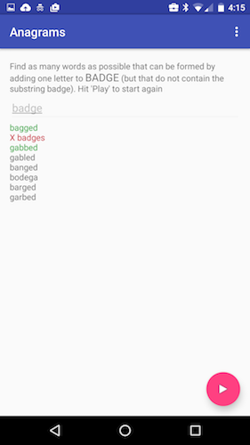

In this unit, we are starting to work on Android Studio, the official IDE for Android application development, based on IntelliJ IDEA.
The biggest part of this preparation will be for you to install and setup Android Studio on your laptop.
Android Studio provides everything you need to start developing apps for Android, including the Android Studio IDE and the Android SDK tools.
Before installing Android Studio, make sure you have JDK 6 or higher installed—the JRE alone is not sufficient. When developing for Android 5.0 (API level 21) and higher, you will need to install JDK 7. To check if you have the correct version of the JDK installed, open a terminal and type
javac -versionIf the JDK is not available or the version is lower than version 6, download the Java SE Development Kit 7
In Android Studio, create a new project:
Fill out the fields on the screen, and click Next.
The following describes the values to fill in:
This should have set you up with a simple hello world project, that can be run on a device or emulator.
Check out the documentation on running your app here
As you start running applications on your phone you will need a way to get information about what your app is doing, particularly as you start debugging issues in your code. In Java, you would do this with calls to System.out.println() but that does not produce the desired result in an Android app. Instead, you will use the logging module as described in this tutorial.
If you run into unexpected error messages over the course of the preparation or workshop, don't hesitate to use Google to search for solutions to your problem. StackOverflow and other online communities contain many useful resources that can help you debug issues that you might encounter with Android Studio and the Android SDK.
If you are still unable to connect to Android Studio and run an app on your device, speak to your local facilitator at the next office hours, or via email.
We will be using a few data structures in the workshop activity, so please look over your course (or online) notes on ArrayLists, HashSets, and HashMaps. You should be able to confidently insert, delete, access and check existence for elements using these data structures in Java.
As an example activity using HashMaps, create a program (not necessarily an Android app - command-line is fine) that will take in a three-letter country code (see ISO-3166) and will return the full name of the country to which it belongs. For example:
As an extension, if the input is greater than 3 letters, consider it as the name of a country, and return the three-letter code for it. Write a helpful error message if the input is neither a valid code nor a country name.
You can find a couple of code snippets that might help in the next step.
Creating and adding Countries to a HashMap:
Reading input and retreiving from a hashmap:
For this workshop, you will be creating an Android app for a simple anagram game.
An anagram is a word formed by rearranging the letters of another word. For example, cinema is an anagram of iceman.
The mechanics of the game are as follows:
In order to ensure that the game is not too difficult, the computer will only propose words that have at least 5 possible valid anagrams.

We have provided you with some starter code that contains a 10,000-word dictionary and handles the UI portions of this game and you will be responsible for writing the AnagramDictionary class that handles all word manipulations.
AnagramsActivity: In Android development an Activity is a single, focused thing that the user can do. Most of our apps in this class will have a single activity but often apps are made up of multiple activities (e.g. login, settings, etc.). The starter code implements several methods:
onCreate: this method gets called by the system when the app is launched. It is made up of some boilerplate code plus code that open the word list to initialize the dictionary and code to connect the text box to the processWord helper.processWord: a helper that adds words to the UI and colors themonCreateOptionsMenu: boilerplateonOptionsItemSelected: boilerplatedefaultAction: this is the handler that is called when the floating button is clicked. Depending on the game mode, it either starts the game or shows the missing answer to the previous game.AnagramDictionary: This class will store the valid words from the text file and handle selecting and checking words for the game. This is where your code will among the following methods:
AnagramDictionary: The constructor. It should store the words in the appropriate data structures (details below).isGoodWord: Asserts that the given word is in the dictionary and isn't formed by adding a letter to the start or end of the base word.getAnagrams: Creates a list of all possible anagrams of a given word.getAnagramsWithOneMoreLetter: Creates a list of all possible words that can be formed by adding one letter to the given word.pickGoodStarterWord: Randomly selects a word with at least the desired number of anagrams.We will start by implementing a simplified version of the game that has the user guess anagrams of the given word.
To do so, your first task will be to advance the implementation of the AnagramDictionary's constructor. Each word that is read from the dictionary file should be stored in an ArrayList (called wordList).
We will store duplicates of our words in some other convenient data structures later but wordList will do for now.
The following code snippets should help you get started.
Implement getAnagrams which takes a string and finds all the anagrams of that string in our input. Our strategy for now will be straight-forward: just compare each string in wordList to the input word to determine if they are anagrams. But how shall we do that?
There are different strategies that you could employ to determine whether two strings are anagrams of each other (like counting the number of occurences of each letter) but for our purpose you will create a helper function (call it sortLetters) that takes a Stringand returns another String with the same letters in alphabetical order (e.g. "post" -> "opst"). Determining whether two strings are anagrams is then a simple matter of checking that they are the same length (for the sake of speed) and checking that the sorted versions of their letters are equal.
At this point, you should have a working app so try running it on your device and verify that it works. You can change the hard-coded return value of pickGoodStarterWord to try out your code with different words (e.g. "skate").
Take a look at documentation for java.util.Arrays to help you with sorting.
The code snippet below may also be useful.
Unfortunately, the straight-forward strategy will be too slow for us to implement the rest of this game. So we will need to revisit our constructor and find some data structures that store the words in ways that are convenient for our purposes. We will create two new data structures (in addition to wordList):
HashSet (called wordSet) that will allow us to rapidly (in O(1)) verify whether a word is valid.HashMap (called lettersToWord) that will allow us to group anagrams together. We will do this by using the sortLetters version of a string as the key and storing an ArrayList of the words that correspond to that key as our value. For example, we may have an entry of the form: key: "opst" value: ["post", "spot", "pots", "tops", ...].As you process the input words, call sortLetters on each of them then check whether lettersToWord already contains an entry for that key. If it does, add the current word to ArrayList at that key. Otherwise, create a new ArrayList, add the word to it and store in the HashMap with the corresponding key.
Ensure that you create and instantiate wordSet, and lettersToWord much like the way you created wordList.
The code snippet below demonstrates how to add words to lettersToWord.
Your next task is to implement isGoodWord which checks:
wordSet), andFor example, with the base word 'post':
Input | Output
isGoodWord("nonstop") | true
isGoodWord("poster") | false
isGoodWord("lamp post") | false
isGoodWord("spots") | true
isGoodWord("apostrophe") | false
Checking whether a word is a valid dictionary word can be accomplished by looking at wordSet to see if it contains the word. Checking that the word does not contain the base word as a substring is left as a challenge!
Finally, implement getAnagramsWithOneMoreLetter which takes a string and finds all anagrams that can be formed by adding one letter to that word.
Be sure to instantiate a new ArrayList as your return value then check the given word + each letter of the alphabet one by one against the entries in lettersToWord.
At this point, you should have a working app so try running your app on your device and verify that it works although the game will be a bit boring since it will always use the same starter word.
The following code snippets may help.
If your game is working, proceed to implement pickGoodStarterWord to make the game more interesting. Pick a random starting point in the wordList array and check each word in the array until you find one that has at least MIN_NUM_ANAGRAMS anagrams. Be sure to handle wrapping around to the start of the array if needed. Run your app again to make sure it's working.
The starter code includes java.util.Random for you. Hence you will also find an object random in your AnagramsDictionary class.
You can thus get a random integer between two limits say min and max for lower and upper limits respectively by using code such as:
int randomNum = rand.nextInt((max - min) + 1) + min;
At this point, the game is functional but can be quite hard to play if you start off with a long base word. To avoid this, let's refactor AnagramDictionary to give words of increasing length.
This refactor starts in the constructor where, in addition to populating wordList, you should also store each word in a HashMap (let's call it sizeToWords) that maps word length to an ArrayListof all words of that length. This means, for example, you should be able to get all four-letter words in the dictionary by calling sizeToWords.get(4).
You should also create a new member variable called wordLength and default it to DEFAULT_WORD_LENGTH. Then in pickGoodStarterWord, restrict your search to the words of lengthwordLength, and once you're done, increment wordLength (unless it's already at MAX_WORD_LENGTH) so that the next invocation will return a larger word.
This activity (like all future activities) contains some optional extensions. If time permits, we would like each group to attempt at least one extension, either from the list below or one that you have invented yourselves.
wordSet since they can still be used as anagrams to other words.